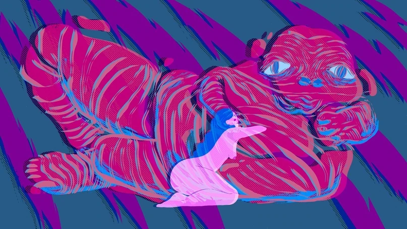

Антон Котенев — о мазохизме женщин
России принято мучить красивых людей. Злобные метробабки толкают баулами возле турникетов, жуткие шамкающие старики пожирают глазами на эскалаторах, задроты пытаются всучить валентинку в вагоне. Каждый день мы с вами читаем новости о бедности и неравенстве, о насилии и угнетении, о жестокости и эксплуатации, о трясущейся руке Жириновского на заднице Рената Давлетгильдеева. Это больно, но не стоит забывать о том, что есть и другое насилие. Ни лобковые скачки Слуцкого, ни эсэмэски Волкова, ни дача Меерсона, ни сауна Бебчука, ни другая ползучая мерзость не были бы возможны без структурного, системного насилия, заложенного в основание патриархата, без тех абьюзивных отношений, которые пронизывают всю ткань нашего общества.

Некрасивые люди много тысячелетий мучили красивых людей и внушили им мысль о собственной неполноценности. Оттого изъеденные самоненавистью женщины сплошь и рядом встают на сторону палачей, угнетателей пуссигрэбберов. Мы все с вами не раз слышали, как мизогинки оправдывают Слуцкого и Вайнштейна, как они снимают с язычка у господ это начальственное «Сама, дура, виновата! Нечего было мини-юбку надевать!» Иногда кажется, что вот эти угнетенные, готовые солидаризироваться с угнетателями, даже опасней самих насильников. Варщицы борщей, носительницы каблуков — они как та лошадка со скотного двора, которая все таскала и таскала за собой ленточки, несмотря на то что ей внятно было сказано: ленточки — символ угнетения, мерзкое и унизительное клеймо старого мира.
Но самое страшное, что женщин приучили стремиться к браку и деторождению. Да, сегодня мы все чаще видим 35-летних фрилансеров-переводчиков, смело дающих отпор косному обществу и жестко заявляющих, что ничего у них там не тикает. «Мне норм!» — кричат фрилансеры, а общество смотрит на них с жалостью и качает головой. Да, мы все знаем спортивных красавиц-вегетарианок, угорающих над свиноматками с их пузожителями. Но по-хорошему настоящих чайлдфри раз-два и обчелся: Карина Орлова да Анна Левченко. Большинство-то женщин реально вешается на какого-нибудь хряка. Сколько потом разбитых носов! А сколько детей с генетическими уродствами! Похожие на крысят, плохо говорящие, жуткие, они шатаются по многочисленным помойкам, оглашая дворы каркающим нечеловеческим смехом.
Турки, азербайджанцы, армяне, арабские шейхи, красномордые снабженцы и дальнобои, поджарые мальчики в джинсах поношенных, эксплозивные задроты, фрустрированные невротики — мы знаем, каким смертным боем они бьют своих несчастных девочек, мы знаем о синяках, о медвежьих капканах, о неизмеримых глубинах газлайтинга, траффикинга и менспрединга. Но дело ведь не в этих мясниках. Грубая физическая агрессия все-таки встречает отпор в обществе. Пусть немногие, но хотя бы некоторые чиновники, полицейские, общественники встанут на сторону жертвы. Есть уголовные статьи, есть шелтеры, есть интернаты для детей с уродствами. Куда страшнее ситуация, в которой даже сама женщина не способна распознать насилие. Только длительная работа с психологом позволяет опознать такие отношения как абьюзивные.
Смотришь: ну нормальный, веселый, в занавеску не сморкается. А у меня сразу сердце сжимается, потому что он не должен быть нормальным, он должен быть космосом! Если он нормальный, почему он старше на десять лет? Почему у него ручки-веточки? Почему у него ножки-тумбочки? Почему у него плешь? Если он нормальный, то где волшебство?!
Престижные партнеры редко берут женщин в жены, а женщины, при всем фрилансе, больше всего боятся остаться наедине с шестью кошами. В селах, в малых городах России девочки хватают за фалды буйных трактористов и пьющих сантехников. Хоть полноватого, хоть маменькиного сынка, хоть наркомана леченого — пусть плохонький, а все равно свой.
Секс-коуч Юлия Печерская сбивается с ног, пытаясь втолковать женщинам очевидное: с малообеспеченными людьми не то что брачеваться, с ними и сексом-то заниматься не стоит. В природе у низкоранговых особей нет секса, и это вполне разумно. Однако в патриархате нет ничего природного и потому самые провальные мужчины почему-то имеют секса столько, сколько пожелают.
Посмотрите на всех этих пьяненьких лысоватых ничтожеств, на тщедушных хмырей, которые заставили общество опознавать себя в качестве художников и писателей. Разве не сводит с ума мысль, что некоторые из них в самом деле перетрахали практически всю богемную Москву? Нет, это не сказки, они действительно сделали это. Я сам видел 300-килограммового еврея, который всегда носил под мышкой пару-тройку мальчиков с обложки. Он не был продюсером или председателем международного комитета, он не был Жириновским, он просто считался обаятельным парнем.